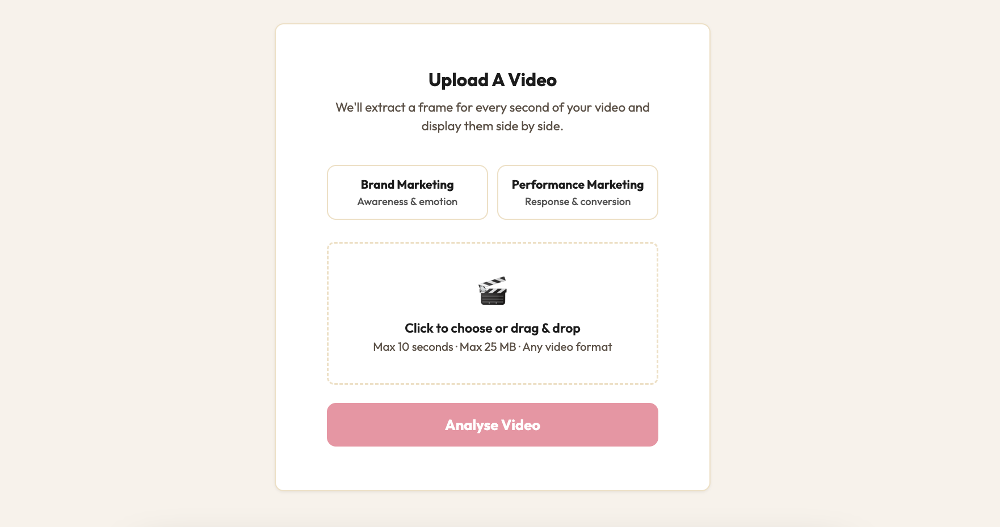
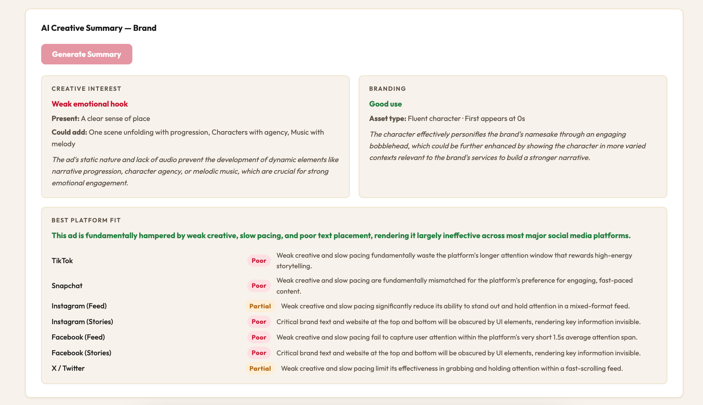
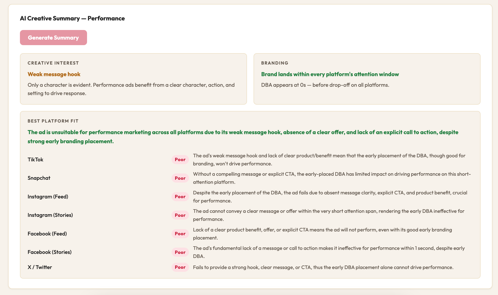

Part 3 ended with a tool that could tell you three things about a social ad: is it interesting, is it well branded, and which platform suits it best. A reasonable summary. But the more I used it, the more I felt it was treating all ads the same. They're not.
In my last entry I wrote about the tension between hooking someone early and getting your brand in front of them early. I've been thinking about that balance ever since. A brand ad and a performance ad are doing fundamentally different jobs. Both useful. Very different purposes.
So Part 4 was about pulling those two things apart.
Before you can run an analysis, the tool now asks you to declare what type of ad you're working with. Brand Marketing or Performance Marketing. That one choice changes everything that follows.

For brand ads, the Creative Interest section is now built on System1's research into what makes creative work emotionally resonant. Their work identifies a set of right-brain features that consistently outperform left-brain approaches in long-term brand building.
| Left Brain | Right Brain |
|---|---|
| Flatness | A clear sense of place |
| Abstracted product, feature, ingredient | One scene unfolding with progression |
| Abstracted body part (e.g. hands, mouth) | Characters with agency (voice, movement, expression) |
| Words obtrude during the ad | Implicit, unspoken communication (knowing glances) |
| Voiceover | Dialogue |
| Monologue (e.g. testimonial) | Distinctive accents |
| Adjectives used as nouns | Play on words or subversion of language |
| Freeze-frame effect | Set in the past (costumes & sets) |
| Audio repetition (metered prose, sound effects) | Reference to cultural works (pastiche/parody) |
| Highly rhythmic soundtrack | Music with melody |
Source: Lemon, Orlando Wood, IPA, 2019
The tool checks for these features in the uploaded video and returns which are present and which are missing, with a summary verdict on creative strength.
For performance ads, the analysis shifts entirely. The tool looks for whether the ad has a clear message and a call to action. Less about story, more about signal.
Part 3 checked whether your Distinct Brand Asset appeared and at what point. Part 4 goes further. The tool now identifies the type of DBA and cross-references it against System1's hierarchy of assets most likely to be recalled.

A logo floating on screen for half a second is not the same as a fluent character built over years. The tool now makes that distinction.
The old platform scoring leaned too heavily on DBA timing and attention windows. Useful signals, but not the full picture. Different content suits different platforms for different reasons.
A brand ad heavy on text overlays with no dialogue is probably not your best TikTok candidate, even if it's short. A performance ad with a sharp product message and an on-screen CTA will land better on Meta than on Snapchat, where that approach tends to feel intrusive.

Part 4 rebuilds platform fit around what actually matters per ad type. Brand ads are assessed on creative quality, character, sound dependency, pacing, and how well the DBA works in that environment. Performance ads are assessed on thumb-stop quality, message clarity, product visibility, offer signals, and CTA presence.
Each platform gets its own verdict. Good, Partial, or Poor, with a reason specific to that combination of ad and platform.
Here is the demo of the Attention Tester with the above additions.